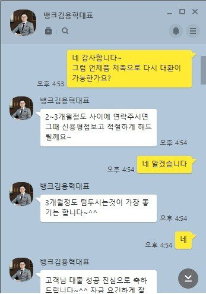

[개인회생자대출] 김용혁대표님 대출후기
안녕하세요
회생면책되어 대환을 알아보던중 여기저기 조회를 해봐도 한도가 안나도더라구요
재회생이라 장기연체삭제내역때문인지는 모르겠지만
2달동안 엄청나게 조회를 한거 같아요
마지막으로 알아보던게 뱅크앤론입니다
대표님께서 직접 답글을 달아주셔서 연락을 하였고 저축은행도 조회를 했는데 부결되었어요
예상은 하고 있었습니다
대부3건 24%를 대환을 하고 싶어서 진행한건데 ....
이번에 대부 이율이 20%로 낮아졌으니 4%로라도 먼저 낮추는게 좋다고 하셔서
면책대출로 알아봐주셨고 한도가 나와 대출이 실행되었습니다
3개월후에 다시 저축은행쪽이나 대환을 할수 있게 해주신다고 하셨구요
일단 3개월동안 신용관리 잘해서 저금리로 대환할수있게 하겠습니다
신경써주셔서 감사합니다
더운날 수고하세요~
